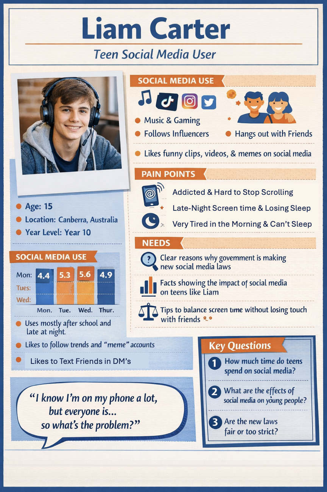
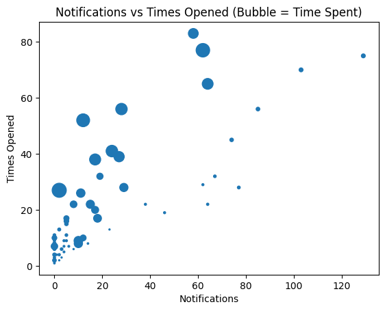
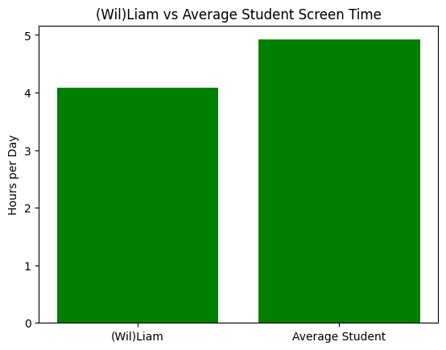
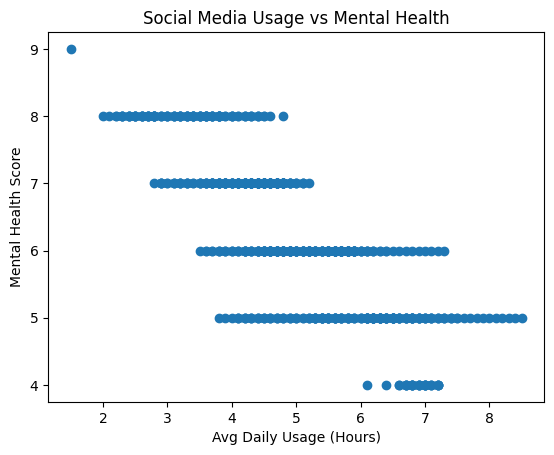

Understanding Social Media Use in Teenagers
Introduction
Social media as of recent years has begun playing a much larger component of teenagers lives, specifically they have been using social media more and more to provide entertainment, connection with friends, and having a sense of belonging. For a lot of people around the world, social media is a normal component of every day life. However as Australia begins bringing in its new under 16 social media laws that aims to "Protect young Australians from pressures and risks that users can be exposed to while logged in to social media accounts. These come from design features that encourage them to spend more time on screens, while also serving up content that can harm their health and wellbeing." - (Esafety commissioner, 2026). This data story aims to explore social media usage and what drives that behaviour and if these actual trends need and support such harsh restrictions.
User Persona

Problem Statement
Liam is a 15-year-old boy trying to manage and understand his social media usage as he relies on it to stay connected and entertained. But he may be negatively affected by excessive screen time and is now facing restrictions due to Australia’s brand new under 16s social media ban law.
Dear Data

| Symbol | Value |
|---|---|
| I | 1 |
| X | 5 |
| ✷ | 50 |
The Dear Data story is designed to be read by looking at it as a pie chart, the outermost ring with coloured dashes representing the relative time for each app. The gap between this and the next circle being a representation of how many times the app was opened over the course of 10 days. The next ring within is the amount of notifications recieved throughout the 10 days. Finally, these two rings are read based on the table.
Behaviour: Notifications and Usage

A deeper analysis of the phone data collected showed a clear relationship between how many notifications an app had and how many time it was opened. This also shows a link between notifications and the usage time of the app, suggesting that the app usage is not purely intentional, but also influenced by the external application notifications attempting to draw the attention towards the app. Rather than choosing to engage with apps, users may be reacting to constant notifications, leading to repeated and often unconscious checking. As Amirthalingam, J., & Khera, A. said, "Users are prompted to check their profiles often by the thrill and sense of urgency created by alerts about new likes, comments, or messages. Teenagers find it challenging to resist the impulse to log in and stay connected because of this continuous barrage of notifications, which fosters habitual use" - (Amirthalingam, J., & Khera, A., 2024).
Attention: Which Apps Dominate
Deeper analysis of the dataset shows that only a small fraction of the total apps used account for a majority of the screen time of the user. These apps primarily consist of social media applications and entertainment apps. This uneven distribution is a key indication of those apps having a significantly higher ability to farm user engagement. The social media platforms offering features such as infinite scrolling, personalised content, and algorithm-driven recommendations agree with the dominance of attention the social media platforms hold. As a result, user attention is concentrated on a limited number of platforms that are specifically designed to maximise time spent, reinforcing patterns of prolonged use, an idea supported by Amirthalingam, J., & Khera, A.
Comparison: (Wil)Liam vs Other Students

Upon comparison of usage trends between (Wil)Liam and other teenagers and students, it becomes increasingly clear that he is not alone in the social media addiction that plagues the youth of today (Yes I know how that sounds but yk). Whether this actual usage is slightly below or above the average, the point remains, the data shows that the high levels of screen time remain common. This suggests that the issue is not limited to one specific individual (Myself), but rather is tied to a widespread trend across many people in this age demographic. "One of the main reasons that adolescents rely on social media platforms is due to peer pressure. There is a strong desire for social acceptance and belonging that influences teenagers to participate in social media activities" - (Amirthalingam, J., & Khera, A., 2024). This normalisation and peer pressure is a key factor which may make it difficult for individuals to recognise potential risks, as their behaviour appears typical within their peer group.
Impact: Mental Health and Sleep

Data from a larger student dataset also reveals a relationship between increased social media usage and negative outcomes such as lower mental health scores and reduced sleep duration. As daily usage increases, there is a general trend toward poorer wellbeing indicators. While this relationship does not prove that social media directly causes these issues, it does suggest a meaningful association that cannot be ignored. These findings support concerns that excessive engagement with social media may have broader impacts beyond simple time use, affecting both physical and mental wellbeing.
Apps vs Screen Time
Analysis of the user behavior dataset shows a positive relationship between the number of apps installed on a device and total daily screen time. Users with more apps tend to spend more time on their devices, likely because a larger number of apps provides more opportunities for engagement and distraction. However, not all apps contribute equally. Social media and entertainment apps dominate usage, while utility or productivity apps account for relatively little screen time. This suggests that simply having more apps increases potential engagement, but the type of app strongly influences actual usage. For teens like (Wil)Liam, this implies that their total screen time is influenced both by the number of apps they have and by which apps capture their attention the most.
Trends, Variability, Bias and Ethics
Across the datasets, several clear trends emerge. Higher notification levels are linked to increased app engagement, and greater overall usage is associated with potential negative impacts on wellbeing. However, there is also variability in the data, with usage patterns differing between apps and across different days, suggesting that behaviour is influenced by multiple factors such as time, context, and individual habits. It is important to acknowledge the limitations of this analysis, as the self-collected data represents only one individual over a short time period, which may not fully reflect broader populations. Additionally, there are ethical considerations surrounding both the design of social media platforms and the introduction of government restrictions. While platforms may use features that encourage addictive behaviour, policies that limit access must balance protecting young users with preserving their autonomy and social connection.
Conclusion
Overall, the data suggests that social media usage is not solely a matter of personal choice, but is strongly influenced by the design of the platforms themselves. Notifications, engagement features, and algorithm-driven content all contribute to increased usage and repeated interaction. When combined with evidence of potential negative impacts on wellbeing, these findings provide a strong justification for the introduction of restrictions on younger users. While such laws may appear strict, they aim to address a system that is designed to maximise engagement rather than support healthy usage. Understanding these patterns allows users like (Wil)Liam to make more informed decisions about their behaviour, and highlights the importance of balancing connection with control.
References
Amirthalingam, J., & Khera, A. (2024). Understanding Social Media Addiction: A Deep Dive. Cureus, 16(10), e72499. https://doi.org/10.7759/cureus.72499
Social media age restrictions | eSafety Commissioner. (2026). Esafety Commissioner. Retrieved March 30, 2026, from https://www.esafety.gov.au/about-us/industry-regulation/social-media-age-restrictions
Salamat, A. (2025). Social_Media_Students_Dataset: A cross-country survey of usage patterns, academic impact, and relationship [Version 1]. Kaggle. https://www.kaggle.com/datasets/aminasalamt/social-media-dataset-2025
Khorasani, V. (2024). Mobile Device Usage and User Behavior Dataset: Analyzing mobile usage patterns and user behavior classification across devices [Version 1]. Kaggle. https://www.kaggle.com/datasets/valakhorasani/mobile-device-usage-and-user-behavior-dataset